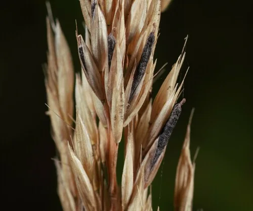

草穗中个别籽粒被深色角状体取代
成熟草穗中若有少数坚硬深色突起，像小角一样取代了正常籽粒，应考虑麦角，将相关材料与食物、饲料分开。

观察着生位置
沿一条完整草穗逐位观察。可疑深色体位于正常籽粒的位置，有时长出颖壳。原位拍摄，并保留相邻正常籽粒作大小参照。
与黑穗区分
麦角是独立的实心结构。散黑穗病会使大半穗变成裸露黑粉，最后只剩穗轴。芒则是花部苞片的延伸，通常比角状体纤细得多。
处理收获物
将可疑谷物、草穗和干草与牲畜、家庭食物隔开。若原计划饲喂或磨粉，可请农业检测实验室或推广人员指导如何评估整批材料。
从单穗扩大到整片
记下草种，并在不同位置拍摄若干草穗。特写可记录外观，但不能凭一个麦角的颜色、大小推断整批谷草是否安全。
若为饲草，先记录可疑草穗来自哪块地、哪一茬，并保留该批收割记录。请检测机构说明取样方式；只挑最显眼的草穗，不能代表整批收获物。